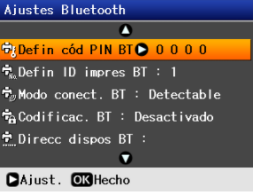
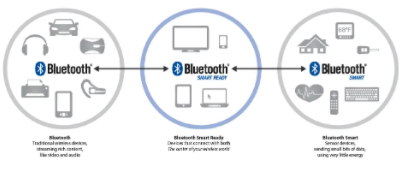

Seguridad Bluetooth
Durante años, las conexiones vía Bluetooth se habían destacado por su eficacia y seguridad, pero hoy en día ya no es así. Un grupo de investigadores acaba de dar a conocer un fallo grave dentro de las conexiones Bluetooth, lo cual catalogan como "una seria amenaza para la seguridad y privacidad de todos los usuarios de Bluetooth".
Este grupo de investigadores dio a conocer los detalles de la vulnerabilidad durante el Simposio USENIX Security. Se trata de un fallo que permitiría que atacantes interfieran en el procedimiento de emparejamiento de Bluetooth. A esta vulnerabilidad la denominaron KNOB.
Este método de ataque explota la debilidad de la clave de cifrado entre los dispositivos, ya que es más corta y más fácil de descifrar mediante ataques de fuerza bruta. Esto expone datos compartidos entre smartphones, ordenadores, coches, altavoces, wearables, dispositivos IoT y más.
Para que un ataque sea exitoso, el atacante debe estar presente y dentro del rango de alcance durante el proceso de conexión, y además debe actuar en una ventana de tiempo muy estrecha. Sin embargo, existen otros ataques que pueden afectar dispositivos simplemente por tener el Bluetooth activado.